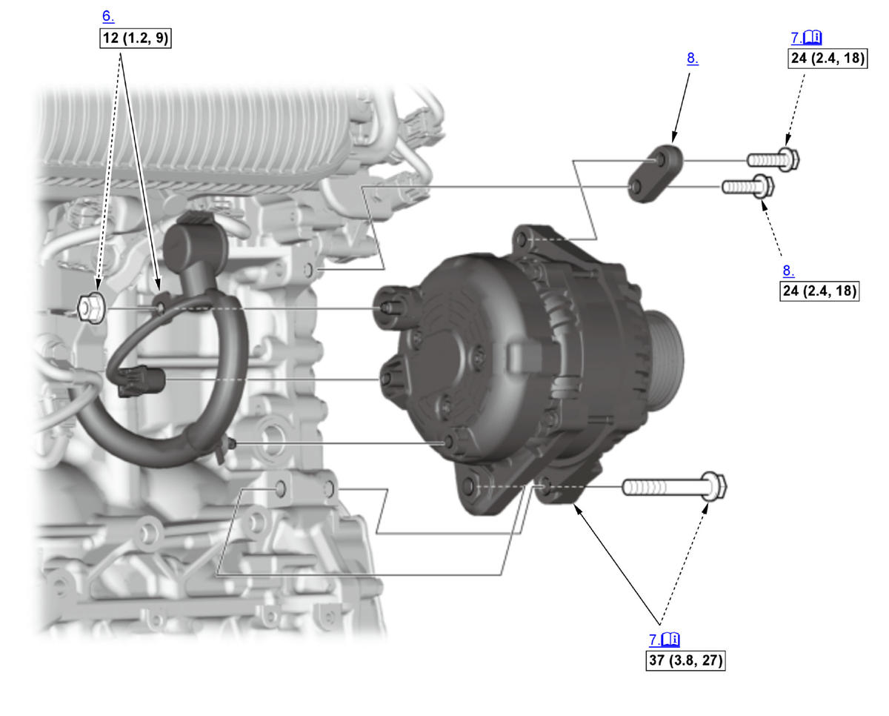
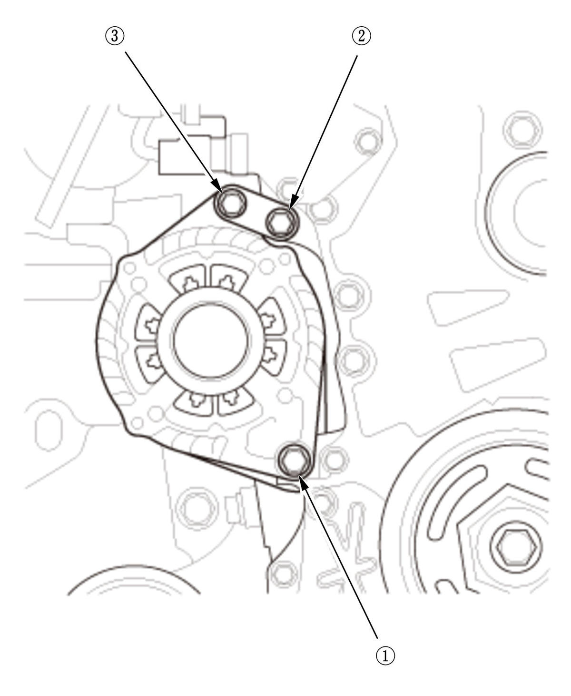

Removal and Installation: Procedure
NOTE:
Numbered call-outs in figure pertain to list numbers in following procedure.

Courtesy of HONDA, U.S.A., INC. |
Detailed information, notes, and precautions |
 |
Torque: N.m (kgf.m, lbf.ft) |
- 12 Volt Battery Terminal - Disconnect
- Engine Undercover - Remove
NOTE: Remove the necessary part(s).
- Drive Belt - Remove
- Exhaust Pipe A - Remove
- Torque Rod - Remove
- Positive Alternator Cable - Disconnect
- Alternator - RemoveFig 2: Identifying Alternator Bolts With Loosening Sequence And Tightening Sequence (K20C1 - 2017-21)

Courtesy of HONDA, U.S.A., INC.NOTE: Remove the alternator from the opening between the front subframe and the intermediate shaft.
Note for installation
- Be sure to use bolt which is applied only to this engine type.
- When installing the alternator, do the following procedures.
-
- Loosen the bolt .
- Loosely tighten the all bolts to finger-tight.
- Tighten the bolts in sequence, to the specified torque.
- Alternator Bracket - Remove (if necessary)
- All Removed Parts - Install
1. Install the parts in the reverse order of removal.